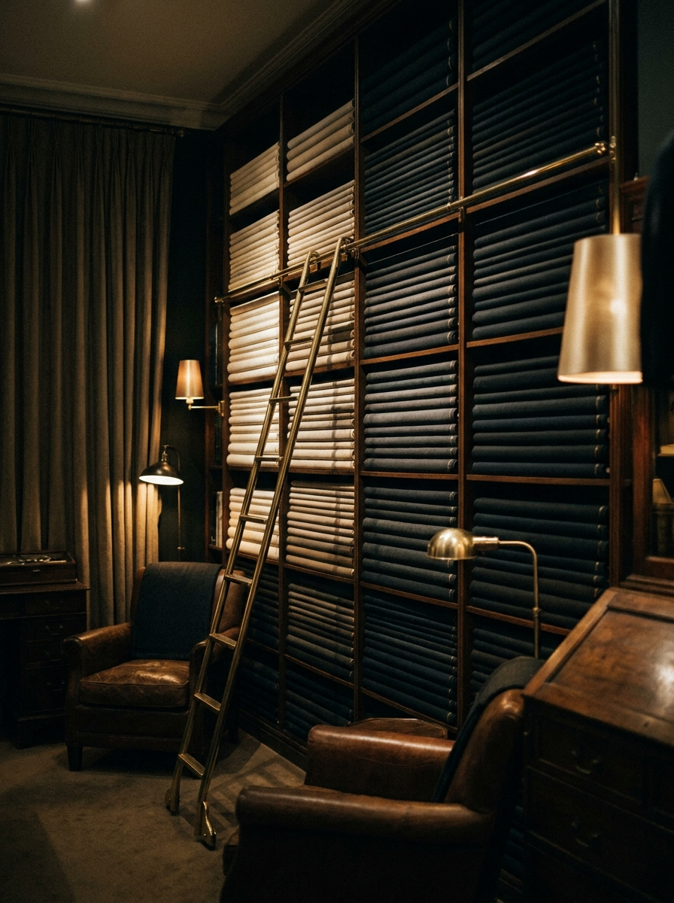

NOIR
NOIR
We cater to the connoisseur of fine tailoring — those who command distinction and elegance. What follows is not a shop. It is a room, a craft, and a single pair of hands kept for you alone.
NOIR was founded on a single obsession — that a suit should be built, not bought. Jay trained his eye on the disciplines that machines cannot replicate: the roll of a hand-padded lapel, the balance of a shoulder, the quiet architecture beneath the cloth that lets a man forget he is wearing anything at all.
Every commission is understood as a personal narrative and reflected in every thread of the work — realised through the hands of master tailors, and delivered with the utmost discretion through our concierge service.
“In a world of abundance, stand singular in style.”
A floating horsehair canvas, never fused — so the jacket moulds to your chest and improves with every wear.
Each lapel is stitched by hand to earn its roll — the single detail that separates bespoke from the rest.
The atelier receives a single guest per appointment. Unhurried, private, and entirely yours.
Over a thousand cloths from heritage English and Italian mills — worsteds, flannels, silks and stretch wools.
Posture, stance and the way you move are recorded into a body profile kept for every future commission.
At-home fittings, wardrobe roadmaps and, when the occasion asks, a concierge for the day itself.

Cloth arranged from bone to black, mill by mill.

Where the suit and the man first meet.

A whisky, the swatch books, and your story.